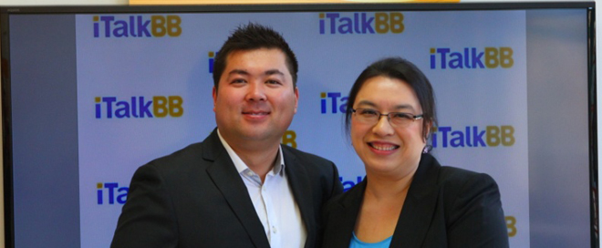

“全美華人最愛看”大型系列票選完美收官-iTalkBB為幸運得獎者舉行盛大頒獎禮
（加州11月1日訊）
由iTalkBB主辦，長達兩月的“全美華人最愛看”大型系列票選在廣大網友的熱情參與中落幕。全美華人最愛的女演員、男演員、電視劇、綜藝節目等等逐一出爐，引發了大家的激烈討論。其中，女演員、男演員的桂冠分別由孫儷和陳道明摘得。中國好聲音、非誠勿擾和康熙來了則無懸念當選最愛看的選秀節目、娛樂節目與台灣節目。在最受小朋友和家長喜愛的少兒節目的票選中，喜羊羊擊敗巧虎登頂。雖然身在海外，但許多美國的華人朋友們仍然鍾情華語娛樂，投票熱情非常高漲，還鼓動身邊朋友參與，捍衛偶像和喜歡的節目。您可以登陸iTalkBB.com/vote查看全部票選結果。
伴隨着每一個華人最愛看的獎項有所歸屬，每周都有22位投票人獲獎，8期總計176名用戶獲得$100現金卡、$10禮品卡等獎勵。而現在，終極大獎-價值$1500的巨屏液晶電視機已被抽出，由居住在加州Orange County的林女士獲得。
一直致力於“為海外華人提供更美好生活”的iTalkBB特意為幸運的林女士在iTalkBB聖蓋博體驗店舉行了盛大的頒獎典禮。11月1日，聖蓋博的全統廣場格外熱鬧熙攘。眾多媒體嘉賓悉數到場，與從各處趕來一探究竟的華人消費者們一同向林女士表達慶賀。
活動於上午11點準時開始，主辦方與獲獎人相繼致辭，iTalkBB還為到場民眾準備了各種精美小禮品，讓大家歡喜不已。幸運得獎者林女士非常激動，大力肯定了本次活動，表示自己很早就知道iTalkBB，身邊有許多朋友都在使用。無意中看到網上有抽獎活動，覺得非常有趣，就抱着試試看的心情參與了，沒想到自己能在數萬票中脫穎而出獲得最終大獎。林女士不住感謝主辦方，並表示以後會繼續支持參與iTalkBB的各項活動。
iTalkBB活動負責人表示，“iTalkBB就是要讓海外華人的生活更美好、更豐富，無論是用心打造適合華人家庭的電話服務、中文電視服務，在華人小區中開設體驗店，還是舉辦此次的投票活動，都是抱着這樣一個目的”。他欣然表示，希望iTalkBB的體驗店能成為小區內華人的交流站，為 每一位需要的華人送上最貼心的服務，讓大家在這裡找到“家”的感覺。
幾乎每十個華裔家庭裡面就有三個家庭做了這個明智的決定，使用 iTalkBB來代替他們原先的傳統電話服務，以及收看中文電視。使用iTalkBB不用更換話機，也可以保留他們的電話號碼。除此之外，他們還可以免費獲得像是三方通話、來電等待、來電轉移，和來電顯示等功能。同時也享有由 iTalkBB獨家提供的中國號碼功能，以及香港、台灣、和韓國號碼等，讓消費者在那些國家的親友撥打一個當地的電話就可以接通到用戶在美國的話機，並不須支付任何的國際電話費，就像撥了一個當地的電話號碼。
每月僅需$4.99起。電話直撥美國和全球，再加$20即得無限暢聊套裝，想說多久說多久。現在加入，全球包月計劃前4個月僅需$9.99/月。另外還送2部手機共享每月500分鐘國際長途。
註冊任意一款家庭電話計劃，即得1年iTalkBB中文電視。 iTalkBB高清中文電視擁有兩岸三地40+熱門頻道，支持實時直播和72小時回看，更有海量電影、電視劇、綜藝節目、幼教節目，全部免費點播。只需支付$49.99的開通費，即可看一整年，沒有月費，沒有設備費，也沒有合約。
iTalkBB全面啟動省錢風暴，優惠多多。詳情請撥打24小時服務熱線1877-482-5522或登入www.iTalkBB.com查詢詳情。